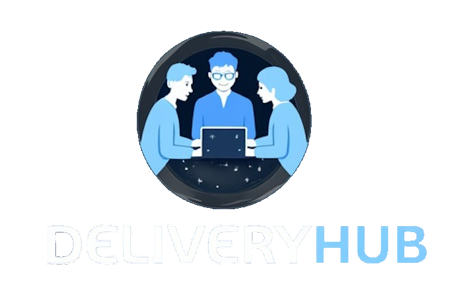

Map the lanes
Connect each open role to Delivery Hub intake, PASS configuration, release, support, or control-room handoff before work starts.

A short engineering brief for 3F & EDIN, focused on Delivery Hub, PASS work, and release flow.
Why we're here: saw 3F & EDIN hiring for full-stack, C++, Control Room, and PassProdotti roles. That looks like delivery demand around Delivery Hub and insurance systems.
The signal says 3F & EDIN is scaling several delivery lanes at once. Full-stack, C++, Control Room, and PassProdotti hiring point to product work, embedded work, and live support happening in parallel. Delivery Hub already promises the full cycle, from functional spec to development, test, and deploy, with PASS insurance skills. The bottleneck is not one missing role. It is keeping quality, release flow, and domain knowledge stable while new people join. If that stays manual, senior engineers spend more time unblocking work than moving client systems forward.
NoticedYour Delivery Hub page puts support, change requests, documentation, and DevOps in one offer. Start by turning that into a shared intake board with clear owners.
Next stepThe page loads video and WordPress/Elementor assets for the product story. Set a page budget, then move heavy media below the first screen.
Use a dedicated squad under your PO or PM for six weeks. The goal is simple: protect Delivery Hub output while hiring continues.
Connect each open role to Delivery Hub intake, PASS configuration, release, support, or control-room handoff before work starts.
Add a small test gate for high-risk insurance flows before client changes reach deploy or support queues.
Create examples, review rules, and test data so new engineers learn the domain faster and ask better questions.
Tune the Delivery Hub and recruiting pages so mobile visitors reach the right action faster, with less media load.
Elinext is a full-cycle software development company, active since 1997, with about 700 in-house specialists and no freelancers. For a Delivery Hub moment, the useful part is dependable capacity across web, backend, C/C++, QA, and DevOps. We have ISO 9001 and ISO 27001 certifications for quality and information security work. Our customer base includes Siemens, Broadcom, Volkswagen, TRUMPF, and TUI. That mix fits a squad that can join your PO, protect PASS knowledge, and keep releases moving.

Elinext helped a regulated insurance platform reduce post-launch defects and keep the product stable.
Read the case study
Elinext built insurance CRM work around SQL Server, .NET, Angular, APIs, and QA.
Read the case studyUseful first step: review the Delivery Hub delivery map together.
Contact Elinext